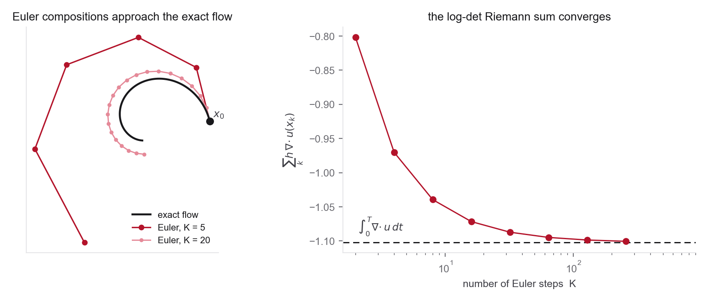

Concepts you need
- Change of variables for densities (Jacobian determinant)
- Determinants of linear and triangular maps
- The expansion \(\det(I+hA)=1+h\,\mathrm{tr}(A)+O(h^2)\) (for the composition part)
- The continuity equation from Problem 2, part 4 (used directly in part 5 here)
- Trace of a matrix and expectations of quadratic forms (for part 6)
If you get stuck
- DMol Chapter 15 for the change-of-variables formula with worked examples
- Neural ODEs, Appendix A for the instantaneous change-of-variables proof if your derivation in part 5 stalls
- FFJORD for the Hutchinson trace estimator and why it matters in high dimensions
Normalizing flows learn an invertible map from a simple distribution to a complex one. Continuous normalizing flows replace a stack of invertible layers with an ODE-defined map.

- Let \(Z\sim p_Z\), \(X=f(Z)\), and \(g=f^{-1}\). Derive \[ p_X(x)=p_Z(g(x))\left|\det \nabla g(x)\right|. \]
- Apply the formula to \(f(z)=Lz+\mu\), where \(L\) is invertible and \(p_Z=\mathcal N(0,I_d)\). Write \(\log p_X(x)\).
- For the triangular map \[ x_1=z_1, \qquad x_2=z_2+\alpha\tanh(z_1), \] compute \(\det \nabla f(z)\). Explain why triangular Jacobians are computationally attractive.
- Connect discrete flows to continuous ones. Compose \(K\) Euler steps \(x_{k+1} = x_k + h\,u(x_k,t_k)\) with \(h=1/K\). Using \(\det(I+hA) = 1 + h\,\mathrm{tr}(A) + O(h^2)\), show that \[ \log\left|\det \nabla f\right| = \sum_{k=0}^{K-1} h\,\nabla\cdot u(x_k,t_k) + O(h) \;\longrightarrow\; \int_0^1 \nabla\cdot u(x_t,t)\,dt. \] A continuous normalizing flow is the \(K\to\infty\) limit of a deep residual flow.
- Starting from the continuity equation, show that along a trajectory \[ \frac{d}{dt}\log p_t(X_t)=-\nabla\cdot u_t(X_t). \] You have now reached the same identity two ways, by composing small steps and by PDE reasoning. Convince yourself they agree, including the sign.
- Write \(\nabla\cdot u_\theta(x,t)\) as a trace. If \(\epsilon\) satisfies \(\mathbb E[\epsilon\epsilon^\top]=I\), prove \[ \mathbb E[\epsilon^\top (\nabla_x u_\theta)\epsilon] = \mathrm{tr}(\nabla_x u_\theta). \] Why is this useful in high dimensions?
- For molecular equilibrium sampling, explain why exact likelihoods and invertible maps are appealing. Then explain why exact invertibility can also be restrictive for molecules with changing atom types, periodic cells, or multiple disconnected modes.
Why this matters. This problem ties the density-learning view to the sampling view. It also prepares students to understand why modern flow matching often avoids maximum-likelihood CNF training while still keeping the ODE transport picture.